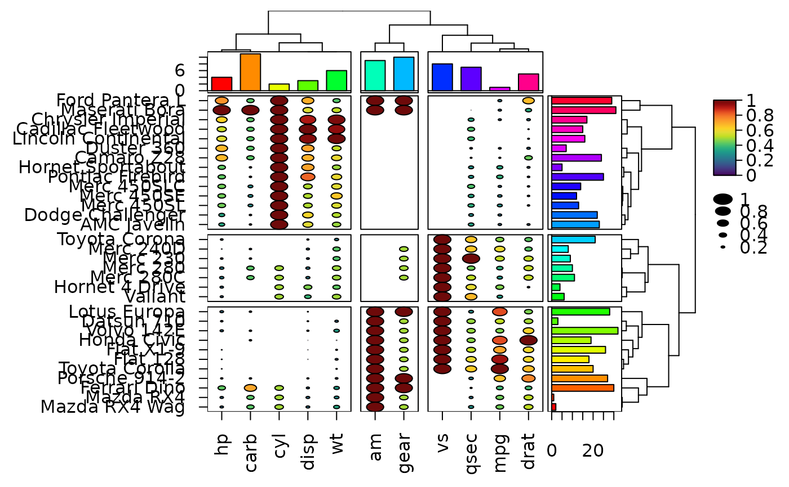
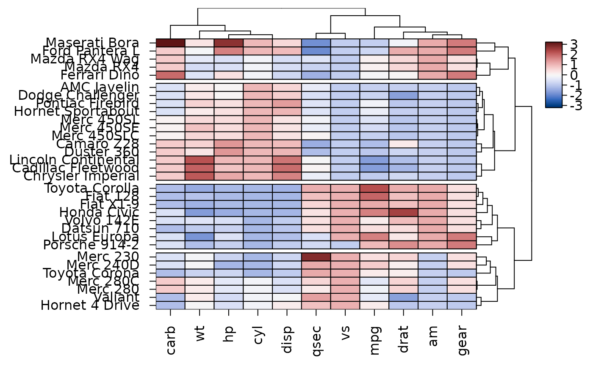
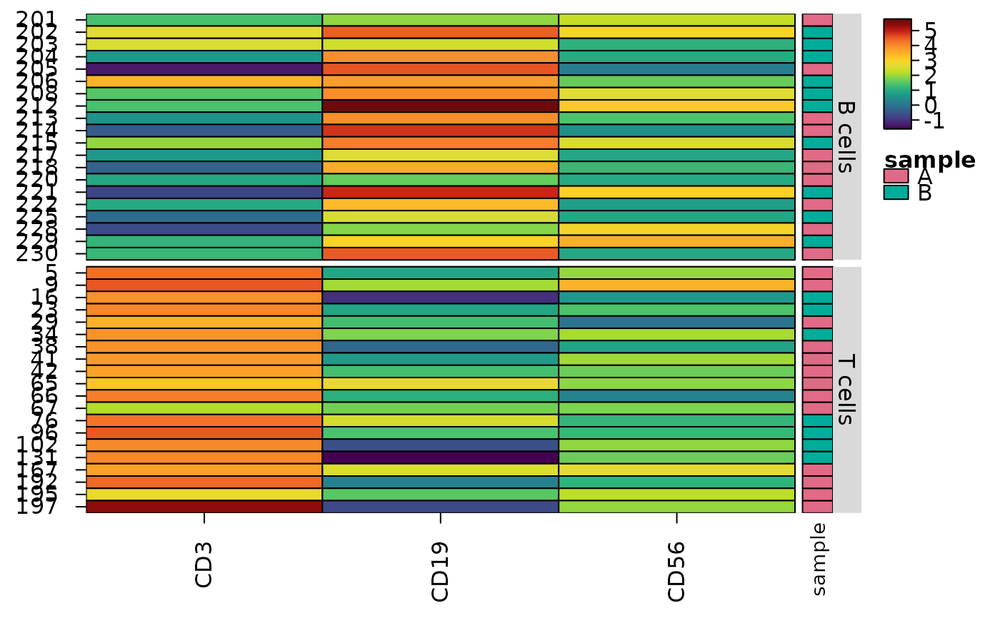
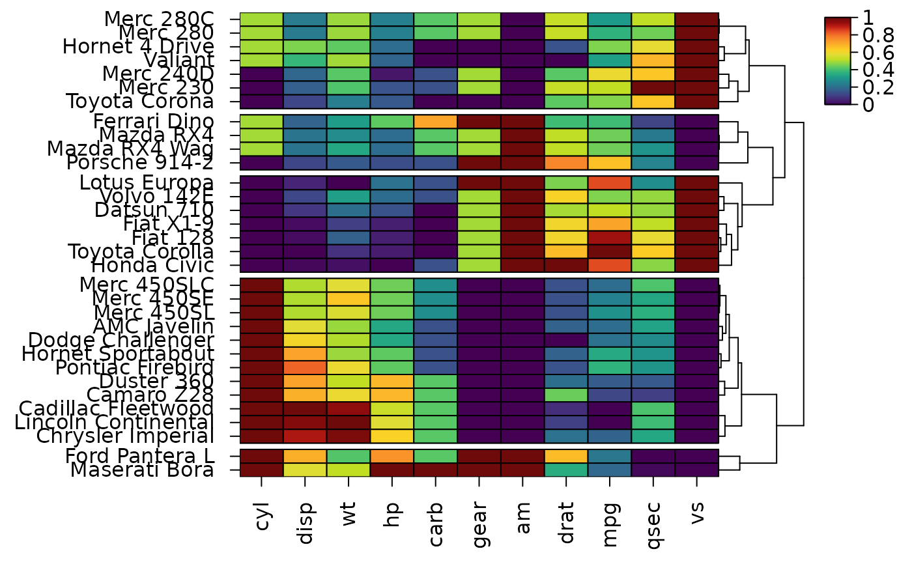

Create a complex heatmap using base graphics
Usage
heat_map(
x,
scale = FALSE,
scale_method = "range",
dist_method = "euclidean",
clust_method = "complete",
clust_max = 5000,
round = 2,
tree = FALSE,
tree_x = NULL,
tree_size_x = 1,
tree_col_x = NULL,
tree_scale_x = FALSE,
tree_order_x = "default",
tree_support_x = NULL,
tree_cut_x = NULL,
tree_kmeans_x = NULL,
tree_split_x = 1,
tree_label_x = FALSE,
tree_label_size_x = 0.1,
tree_label_col_x = "grey85",
tree_label_col_alpha_x = 1,
tree_label_text_x = NA,
tree_label_text_font_x = 1,
tree_label_text_size_x = 1,
tree_label_text_col_x = "auto",
tree_label_text_col_alpha_x = 1,
tree_y = NULL,
tree_size_y = 1,
tree_col_y = NULL,
tree_scale_y = FALSE,
tree_order_y = "default",
tree_support_y = NULL,
tree_support_labels = TRUE,
tree_cut_y = NULL,
tree_kmeans_y = NULL,
tree_split_y = 1,
tree_label_y = FALSE,
tree_label_size_y = 0.1,
tree_label_col_y = "grey85",
tree_label_col_alpha_y = 1,
tree_label_text_y = NA,
tree_label_text_font_y = 1,
tree_label_text_size_y = 1,
tree_label_text_col_y = "auto",
tree_label_text_col_alpha_y = 1,
cell_shape = "rect",
cell_size = FALSE,
cell_col_palette = c("red", "blue", "green", "orange", "magenta", "purple"),
cell_col_scale,
cell_col_scale_limits = NULL,
cell_col_scale_center = NULL,
cell_col_scale_breaks = NULL,
cell_col_blocks_x = NULL,
cell_col_blocks_y = NULL,
cell_size_scale_limits = NULL,
cell_size_scale_method = "linear",
cell_size_scale_range = c(0, 1),
cell_col_alpha = 1,
cell_uncertainty = NULL,
cell_uncertainty_breaks = NULL,
cell_uncertainty_title = "Uncertainty",
cell_split = NULL,
cell_split_labels = c("x", "cell_split"),
cell_split_size = NULL,
cell_col_empty = "white",
cell_border_line_type = 1,
cell_border_line_width = 1,
cell_border_line_col = "black",
cell_border_line_col_alpha = 1,
cell_grid_line_col = NA,
cell_border_mask = NULL,
cell_text = FALSE,
cell_text_font = 1,
cell_text_size = 1,
cell_text_col = "white",
cell_text_col_alpha = 1,
bar_size_x = 1,
bar_values_x = NULL,
bar_type_x = NULL,
bar_axis_label_x = NULL,
bar_axis_label_adj_x = 0,
bar_axis_label_font_x = 1,
bar_axis_label_size_x = 1,
bar_axis_label_col_x = "black",
bar_axis_label_col_alpha_x = 1,
bar_fill_x = "grey40",
bar_fill_alpha_x = 1,
bar_line_type_x = 1,
bar_line_width_x = 1,
bar_line_col_x = "black",
bar_line_col_alpha_x = 1,
bar_size_y = 1,
bar_values_y = NULL,
bar_type_y = NULL,
bar_axis_label_y = NULL,
bar_axis_label_adj_y = 0,
bar_axis_label_font_y = 1,
bar_axis_label_size_y = 1,
bar_axis_label_col_y = "black",
bar_axis_label_col_alpha_y = 1,
bar_fill_y = "grey40",
bar_fill_alpha_y = 1,
bar_line_type_y = 1,
bar_line_width_y = 1,
bar_line_col_y = "black",
bar_line_col_alpha_y = 1,
axis_text_x = NULL,
axis_text_side_x = "bottom",
axis_text_font_x = 1,
axis_text_size_x = 1,
axis_text_col_x = "black",
axis_text_col_alpha_x = 1,
axis_text_angle_x = 3,
axis_text_adjust_x = 0.45,
axis_label_x = NULL,
axis_label_font_x = 2,
axis_label_size_x = 1.2,
axis_label_col_x = "black",
axis_label_col_alpha_x = 1,
axis_ticks_length_x = 1,
axis_text_y = NULL,
axis_text_side_y = "left",
axis_text_font_y = 1,
axis_text_size_y = 1,
axis_text_col_y = "black",
axis_text_col_alpha_y = 1,
axis_text_angle_y = 1,
axis_text_adjust_y = 0.45,
axis_label_y = NULL,
axis_label_font_y = 2,
axis_label_size_y = 1.2,
axis_label_col_y = "black",
axis_label_col_alpha_y = 1,
axis_ticks_length_y = 1,
margins = c(NA, NA, NA, NA),
title = NULL,
title_text_font = 2,
title_text_size = 1.5,
title_text_col = "black",
title_text_col_alpha = 1,
annotation_x = NULL,
annotation_y = NULL,
annotation_colours = NULL,
annotation_size_x = 0.2,
annotation_size_y = 0.2,
annotation_text_size = 0.9,
annotation_text_font = 1,
annotation_text_col = "black",
annotation_legend = TRUE,
legend = TRUE,
legend_side = "auto",
legend_size = 1,
legend_col_scale_size = 1,
legend_col_breaks = NULL,
legend_col_density = FALSE,
legend_size_format = NULL,
legend_title = NULL,
legend_title_text_font = 2,
legend_title_text_size = 1,
legend_title_text_col = "black",
legend_title_text_col_alpha = 1,
legend_text_font = 1,
legend_text_size = 1,
legend_text_col = "black",
legend_text_col_alpha = 1,
mark_x = NULL,
mark_y = NULL,
mark_labels_x = NULL,
mark_labels_y = NULL,
mark_line_col = "grey40",
zoom_x = NULL,
zoom_y = NULL,
zoom_size_x = NULL,
zoom_size_y = NULL,
zoom_side_x = NULL,
zoom_side_y = NULL,
cell_raster = "auto",
cell_values = NULL,
cell_glyph = "density",
cell_glyph_range = "column",
cell_glyph_col = "grey10",
cell_glyph_fill = "#FFFFFF8C",
fit_text = TRUE,
popup = TRUE,
popup_size = c(7, 7),
features = NULL,
assay = NULL,
group_by = NULL,
group_max = NULL,
annotation_by = NULL,
swap_axes = FALSE,
transform = NULL,
cofactor = 5,
scale_q = 0.01,
bimodal = FALSE,
...
)Arguments
- x
matrix or data.frame containing the data to display in the heatmap, or single-cell data: a
SingleCellExperimentorSummarizedExperiment, aSeuratobject, aflowFrameorflowSet, or a sparse matrix (e.g. adgCMatrix, one cell per row), or an AnnData file read byheat_map_read_h5ad(or the name of an.h5adfile). Assays can be held on disk:DelayedArrayobjects (e.g. theHDF5MatrixandTENxMatrixof HDF5Array) and BPCells matrices (e.g. inSeuratlayers) are read a block of features at a time. Single-cell data are drawn with one row per cell and one column per feature (seefeatures,assay,group_by,group_max,annotation_byandswap_axes).- scale
logical indicating whether the data should be scaled prior to constructing the heatmap (
TRUEscales each column). Additional options include"column"or"row"to indicate whether scaling should be performed within each column or each row. For convenience, the name of a scaling method ("range","mean","zscore"or"quantile") can also be supplied to apply that method to each column.- scale_method
indicates the type of scaling to perform on
rowsorcolumnsas indicated byscale, options include"range","mean","zscore"or"quantile"(0 to 1 between thescale_qand1 - scale_qquantiles, with the values beyond them clipped); seeheat_map_scale. Set to"range"by default.- dist_method
indicates the type of distance metric to use when constructing dendrograms, set to
"euclidean"distance by default. See?distfor alternatives. Also supports"cosine"for cosine distance (1 - cosine similarity),"pearson","spearman"or"kendall"for one minus the correlation (common for gene expression), or a function that takes the matrix being clustered (one row per row or column of the heatmap) and returns adistobject or a square matrix of distances.- clust_method
indicates the type of agglomeration method to use when performing hierarchical clustering, set to
"complete"by default. See?hclustfor alternatives.- clust_max
the largest number of rows (or columns) clustered exactly, set to 5000 by default. Exact clustering needs the distances between every pair of rows, so its memory and time grow with the square of their number (about 400 MB and 1.5 seconds on two cores for 10,000 rows). Larger margins are clustered in two stages: a sample of
clust_maxrows is clustered exactly, its dendrogram is split into groups, every row joins the group of its nearest group medoid and each group is clustered exactly beneath the sample's dendrogram (seeheat_map_clust). 100,000 rows take about half a second. Branch support (tree_support_x,tree_support_y) is only computed for up toclust_maxrows or columns. Set toInfto always cluster exactly. Rows or columns grouped bytree_cut_xortree_cut_y(ortree_kmeans_x,tree_kmeans_y) are clustered within each group, and the groups share the limit in proportion to their size (at least 50 rows each), so grouped clustering takes no longer than clustering all the rows at once.- round
indicates the number of decimal places to round values when
cell_text = TRUEand values are displayed in the heatmap, set to 2 decimal places by default- tree
options include
"row","y","column","x"or"both"(orTRUE) to indicate the axes for which dendrograms should be constructed, set to FALSE by default. This argument overrides thetree_xandtree_yarguments.- tree_x
logical indicating whether dendrograms should be constructed for the x axis (columns), set to NULL by default. Alternatively, a pre-computed
hclustordistobject describing the columns ofx, such asheat_map_info(hm)$tree_xfrom a previous heatmap. Clusters stored in thehclustobject are kept unlesstree_cut_xis supplied.- tree_size_x
numeric to control the height of the dendrogram for the x axis, set to 1 by default (0.6 inches).
- tree_col_x
colours for the branches of the x axis dendrogram: one colour for the whole tree or, with clusters (
tree_cut_xortree_kmeans_x), one colour for each cluster from left to right, which colours the branches within the cluster (the branches joining clusters stay black), orTRUEfor distinct colours. Set toNULLby default for black branches. The cluster labels take the same colours unlesstree_label_col_xis given.- tree_scale_x
logical indicating whether the branch heights of the x axis dendrogram should be scaled for better visualisation, set to FALSE by default.
- tree_order_x
how the branches of the x axis dendrogram are ordered, either
"default"(the order fromhclust),"olo"(optimal leaf ordering, Bar-Joseph et al. 2001, which flips branches so that neighbouring columns are as similar as possible),"mean"(branches ordered by their mean values -heatmaporders them by the sum of their columns' means instead, which favours small branches) or"spectral". Optimal leaf ordering is exact for up to 4000 columns, which takes well under a second; larger dendrograms are ordered in blocks (seeheat_map_clust). A spectral order needs no dendrogram: the columns are ordered by recursive spectral bisection (Shi and Malik 2000; Atkins et al. 1998) of the graph joining each column to its 6 nearest neighbours (bydist_method, weighted as in UMAP, McInnes et al. 2018), which lays gradients and trajectories out along their length, cycles around their loop and clusters one after another, and runs of up to 12 columns are then reversed where that brings similar columns together (windowed 2-opt, Croes 1958). With a dendrogram, its branches are ordered by the mean spectral position of their columns. Up toclust_maxcolumns are ordered exactly; more are ordered from a sample ofclust_maxlandmarks, each other column placed beside its nearest landmark (200,000 take about 4 seconds)."peak"orders the columns by where they are highest along the rows, in the order of the rows in the data (ties by where they are lowest), so that features peaking early along a trajectory come first and cascades run diagonally (seeheat_map_smooth); it needs no dendrogram either, and with one orders its branches by the mean peak position of their columns. The rows of a trajectory fromheat_map_smooth()are placed by their position along it (e.g. pseudotime), so the peaks of its lineages are compared by when they occur; other rows split into groups by a factor or charactertree_cut_y(orgroup_by) are placed by their position within their group.- tree_support_x
TRUEor a number of resamples (at least 10) to draw each branch of the x axis dendrogram by its bootstrap support (Felsenstein 1985): the rows are resampled with replacement and the columns clustered again (withdist_methodandclust_method, within each group for a dendrogram split by groups), and each branch scores the proportion of resamples in which its exact set of columns is a branch again. Branches with 90% support or more are thick black lines, 70-89% grey lines and lower support dashed lines, with a key in the legend.TRUEuses 100 resamples. The resamples use a fixed seed (leaving the random number generator as it was), so the support is the same each time the heatmap is drawn.heat_map_info()returns the support of each branch.- tree_cut_x
either a numeric ranging from 0 to 1 indicating the branch cut height for x axis dendrogram (proportional for non-cosine distances, or absolute cosine distance threshold when
dist_method = "cosine"), an integer indicating the desired number of clusters to obtain by cutting the x axis dendrogram, or"auto"to choose the number of clusters from the data by their mean silhouette width (from 2 to 20 clusters, or none when no cut reaches a width of 0.25; seeheat_map_clust). Alternatively, clusters can be manually defined by specifying the number of columns to include in each cluster in the displayed order (e.g., c(3,4,5)), or a vector of cluster indices can be supplied to assign each column to a specific cluster (e.g., c(1,1,1,2,2,2,2,3,3,3) for 10 columns in 3 clusters). Numeric cluster indices are given column by column from the left of the heatmap as it is displayed without them (in the dendrogram order whentree_xis requested), so clusters can be assigned by reading a heatmap. Named indices are matched to the column names ofx, and labels (character or factor, e.g. treatments from metadata) are given in the original column order ofx. Columns are regrouped so that each cluster is contiguous, ordered from left to right. When a vector of indices is supplied, its length must equal the number of columns inx; if its length also matches a valid set of cluster sizes, it is treated as cluster indices. If a dendrogram is requested (tree_x = TRUE), the columns are clustered within each cluster and the clusters are joined at the top of the dendrogram, so the clusters act as groups (e.g. treatments) with a dendrogram inside each one. A dendrogram supplied as anhclustordistobject (or a heatmap with non-numeric columns) is kept only when the clusters are contiguous in its order. Clusters are always numbered, and labelled bytree_label_text_x, in the displayed order from left to right.- tree_kmeans_x
number of k-means clusters (Hartigan and Wong 1979) to split the columns of
xinto, an alternative totree_cut_x(e.g.tree_kmeans_x = 3). Seetree_kmeans_y.- tree_split_x
a numeric to control the spacing between x axis tree splits, set to 1 by default. Setting the argument to 0 will remove axis tree splits. Each unit is 0.08 inches.
- tree_label_x
logical indicating whether a label should be added for each cluster within the x axis tree when
tree_cut_xis specified, set to FALSE by default.- tree_label_size_x
numeric to control the height of the tree cluster labels for the x axis tree, set to 0.1 by default. Strips holding label text are made tall enough for the text; the strip is at least 0.8 inches x
tree_label_size_xtall.- tree_label_col_x
vector of colours to use for x axis tree cluster labels from left to right, set to "grey85" (light grey) by default - or, with one colour per cluster in
tree_col_x, to the colours of the branches. The settings of the cluster labels take one value, or one for each cluster; other lengths are recycled with a warning.- tree_label_col_alpha_x
numeric to control the transparency of the x axis tree cluster labels, set to 1 by default to use solid colours.
- tree_label_text_x
a vector of text to include in the x axis tree cluster labels from left to right, set to NA by default.
- tree_label_text_font_x
a vector of font types to use for text in x axis cluster labels, set to 1 by default for plain text. See
fontin?parfor alternatives.- tree_label_text_size_x
a vector of numerics to control the size of the text in the x axis cluster labels, set to 1 by default.
- tree_label_text_col_x
a vector of colours to control the colour of text in x axis cluster labels, set to
"auto"by default to use white text on dark labels and black text on light ones, whichever contrasts more with the colour of each label (by the contrast ratio of the Web Content Accessibility Guidelines).- tree_label_text_col_alpha_x
a vector of numerics to control the transparency of text in x axis cluster labels, set to 1 by default to use solid colours.
- tree_y
logical indicating whether dendrograms should be constructed for the y axis (rows), set to NULL by default. Rows are drawn from the top in the dendrogram order (as columns are from the left), or in the order of
xwithout a dendrogram. Alternatively, a pre-computedhclustordistobject describing the rows ofx, such asheat_map_info(hm)$tree_yfrom a previous heatmap. Clusters stored in thehclustobject are kept unlesstree_cut_yis supplied.- tree_size_y
numeric to control the width of the dendrogram for the y axis, set to 1 by default (0.6 inches).
- tree_col_y
colours for the branches of the y axis dendrogram, as
tree_col_x, with one colour for each cluster from top to bottom.- tree_scale_y
logical indicating whether the branch heights of the y axis dendrogram should be scaled for better visualisation, set to FALSE by default.
- tree_order_y
how the branches of the y axis dendrogram are ordered, either
"default","olo","mean","spectral"or"peak", as fortree_order_x. A spectral order without a dendrogram orders the rows on their own (e.g. cells along a differentiation trajectory or samples along a time course); rows grouped bytree_cut_yortree_kmeans_ykeep it within each group."peak"orders the rows by where they are highest along the columns (e.g. genes along pseudotime withswap_axes = TRUE), within the groups of a factor or charactertree_cut_x.- tree_support_y
TRUEor a number of resamples to draw each branch of the y axis dendrogram by its bootstrap support, resampling the columns. Seetree_support_x.- tree_support_labels
logical indicating whether larger branches (at least 5 leaves and an eighth of all leaves) are labelled with their support as a percentage, set to TRUE by default.
- tree_cut_y
either a numeric ranging from 0 to 1 indicating the branch cut height for y axis dendrogram (proportional for non-cosine distances, or absolute cosine distance threshold when
dist_method = "cosine"), an integer indicating the desired number of clusters to obtain by cutting the y axis dendrogram, or"auto"to choose the number of clusters by mean silhouette width, as fortree_cut_x. Alternatively, clusters can be manually defined by specifying the number of rows to include in each cluster in the displayed order, starting from the top of the heatmap (e.g., c(3,4,5)), or a vector of cluster indices can be supplied to assign each row to a specific cluster (e.g., c(1,1,1,2,2,2) for 6 rows in 2 clusters). Numeric cluster indices are given row by row from the top of the heatmap as it is displayed without them (in the dendrogram order whentree_yis requested; without a dendrogram in the order ofx). Named indices are matched to the row names ofx, and labels (character or factor, e.g. cell types from metadata) are given in the original row order ofx. Rows are regrouped so that each cluster is contiguous, the first cluster at the top. When a vector of indices is supplied, its length must equal the number of rows inx. If a dendrogram is requested (tree_y = TRUE), the rows are clustered within each cluster and the clusters are joined at the top of the dendrogram (e.g. cells grouped by cell type, each with its own dendrogram); a suppliedhclustordistobject is kept only when the clusters are contiguous in its order. Clusters are always numbered, and labelled bytree_label_text_y, in the displayed order from the top of the heatmap to the bottom, which may differ from the supplied indices when the dendrogram order is kept.- tree_kmeans_y
number of k-means clusters to split the rows of
xinto, an alternative totree_cut_ythat is quick for many rows (e.g.tree_kmeans_y = 4). The rows are clustered on the numeric columns ofxafter scaling, by the Hartigan-Wong algorithm (in compiled code), from the centres of equal slices of the rows along their first principal component and from nine k-means++ starts (Arthur and Vassilvitskii 2007, greedy as in Grunau et al. 2023), fitted on separate threads, keeping the clusters with the smallest within-cluster sum of squares (for more than 20,000 rows, the starts are compared on a sample of 20,000, the best few fits of the sample are compared on every row, and every row is then fitted from the best). The starts use fixed seeds, so the clusters don't depend on the random seed. The clusters are ordered so that similar clusters are neighbours (optimal leaf order of their centres) and then act like groups supplied totree_cut_y: with a dendrogram (tree_y = TRUE) the rows are clustered within each k-means cluster, andtree_split_yandtree_label_yseparate and label the clusters. Missing values are replaced by the mean of their column for k-means.heat_map_info()$row_clustersreturns the clusters.- tree_split_y
a numeric to control the spacing between y axis tree splits, set to 1 by default. Setting the argument to 0 will remove axis tree splits. Each unit is 0.08 inches.
- tree_label_y
logical indicating whether a label should be added for each cluster within the y axis tree when
tree_cut_yis specified, set to FALSE by default.- tree_label_size_y
numeric to control the width of the tree cluster labels for the y axis tree, set to 0.1 by default. Strips holding label text are made wide enough for the text; the strip is at least 0.8 inches x
tree_label_size_ywide.- tree_label_col_y
vector of colours to use for y axis tree cluster labels from top to bottom, set to "grey85" (light grey) by default - or, with one colour per cluster in
tree_col_y, to the colours of the branches.- tree_label_col_alpha_y
numeric to control the transparency of the y axis tree cluster labels, set to 1 by default to use solid colours.
- tree_label_text_y
a vector of text to include in the y axis tree cluster labels from the top of the heatmap to the bottom, set to NA by default. Other settings with one value per row cluster (colours, fonts and sizes) are also given from the top.
- tree_label_text_font_y
a vector of font types to use for text in y axis cluster labels, set to 1 by default for plain text. See
fontin?parfor alternatives.- tree_label_text_size_y
a vector of numerics to control the size of the text in the y axis cluster labels, set to 1 by default.
- tree_label_text_col_y
a vector of colours to control the colour of text in y axis cluster labels, set to
"auto"by default to use white text on dark labels and black text on light ones, whichever contrasts more with the colour of each label (by the contrast ratio of the Web Content Accessibility Guidelines).- tree_label_text_col_alpha_y
a vector of numerics to control the transparency of text in y axis cluster labels, set to 1 by default to use solid colours.
- cell_shape
indicates the shape to use for the cells in the heatmap, options include
"rect","circle","diamond","ellipse","number"or"none". Circles, diamonds and ellipses stay round on cells that aren't square, sized by the shorter side of the cells. Ellipses show values between -1 and 1, such as correlations, by their shape (Murdoch and Chow 1996) - the outline of a bivariate normal distribution with that correlation, rising to the right for positive values, falling for negative values, and narrower the closer the value is to -1 or 1 (a circle at 0); values beyond -1 and 1 are drawn as -1 or 1 with a warning."number"writes the value of each cell (or itscell_text) in the colour of the cell instead of filling it, darkened where the colour is too light to read, and"none"leaves the cell empty apart from itscell_text. Alternatively, a matrix of the same dimensions asxcontaining the shape to use for each cell, e.g. ellipses below the diagonal of a correlation matrix and numbers above it (seeheat_map_cor).- cell_size
logical indicating whether each cell in the heatmap should be scaled by the value in
x, set to FALSE by default. Alternatively, a matrix of the same dimensions asxcontaining the values by which the size of each cell should be scaled.- cell_col_palette
a vector of colours from which colours are selected for columns containing non-numeric data, one for each distinct value (interpolated between the colours when there are more values). Alternatively, the name of a palette listed in
hcl.pals(e.g."Dark 3") or a function that returnsncolours. With the default colours, values beyond the six take distinct colours of several lightnesses, each the furthest from the colours before it (as Glasbey et al. 2007 choose them), so that dozens of values can be told apart.- cell_col_scale
a vector of colours to use for the colour scale of numeric values. By default the scale runs through the colour-blind friendly viridis colours (as in viridisLite) from dark purple to yellow, then on through orange and red to dark red. Alternatively, the name of a palette listed in
hcl.pals(e.g."viridis"or"Blue-Red 3"), a palette function that takes the number of colours as its first argumentn(e.g. one created bycolorRampPalette), or a function created bycolorRamp.- cell_col_scale_limits
a numeric vector of length 2 specifying custom limits for the colour scale as
c(min, max). If NULL (default), limits are computed from the data before rounding. Custom limits allow you to set consistent colour scales across multiple heatmaps or override automatic scaling. Set to"robust"to use the 2nd and 98th percentiles of the data, so that a few outliers don't wash out the colour scale; values beyond the limits take the colours at the ends of the scale.- cell_col_scale_center
optional numeric value at which to centre the colour scale, set to NULL by default. When supplied, the colour scale limits are made symmetric around this value so that it maps to the middle colour of
cell_col_scale. Useful with diverging palettes such as"Blue-Red 3"andscale_method = "zscore"(center = 0).- cell_col_scale_breaks
a numeric vector of at least two breaks that bin the values into a stepped colour scale, set to NULL by default for a continuous scale. Each bin between consecutive breaks takes one colour, evenly spaced along
cell_col_scalewhatever the widths of the bins, and values beyond the outer breaks take the colours of the outer bins. The breaks set the limits of the colour scale and label the colour legend.- cell_col_blocks_x, cell_col_blocks_y
blocks of columns (or rows), each with its own colour scale and colour legend: a vector or factor with one value per column (row) of
xin its original order, naming the block of each - e.g."RNA"for the columns of genes and"ADT"for those of proteins, whose values aren't comparable. Each block's colours span its own values (or its owncell_col_scale_limits) and its legend is titled by its name.cell_col_scale,cell_col_scale_limitsandcell_col_scale_centerthen take one setting for every block or a list with one per block (in the order of the blocks, or named by them). Blocks are separate from clusters: give the same vector totree_cut_xto split and label the blocks (asheat_map_aligndoes). Can't be combined withcell_col_scale_breaksorcell_uncertainty. Set toNULLby default for one colour scale.- cell_size_scale_limits
a numeric vector of length 2 specifying custom limits for the size scale as
c(min, max). If NULL (default), limits are computed from the data before rounding. Only used whencell_sizeis not FALSE. Custom limits allow consistent size scales across multiple heatmaps.- cell_size_scale_method
indicates how values are mapped to cell sizes, either
"linear"(default) to scale the width of each cell with its value, or"area"to scale the area of each cell with its value, which is perceptually more accurate.- cell_size_scale_range
numeric vector of length 2 indicating the smallest and largest relative cell sizes (as a proportion of the cell width), set to
c(0, 1)by default. Increasing the lower limit (e.g.c(0.1, 1)) ensures cells with the smallest values remain visible.- cell_col_alpha
a numeric to control the fill transparency of cells within the heatmap, set to 1 by default to use solid colours. A different transparency can be used for each cell by supplying a matrix with the same dimensions as
x, or a vector that is recycled down the columns ofx(as inmatrix()). Legends use solid colours unless all cells share the same transparency.- cell_uncertainty
a numeric matrix with the same dimensions as
xholding the uncertainty of each value, such as a standard error, a confidence interval width or a p-value. Cells are coloured with a value-suppressing palette (Correll et al. 2018): the more uncertain a value, the fewer colours its part of the scale has and the closer they are to grey, so an uncertain value can't look like a strong one. The most certain level uses 8 colours across the scale (with the default 4 levels), the next 4, then 2, and the most uncertain level a single, nearly grey colour. Missing uncertainties are treated as the most uncertain. The colour legend becomes a key with one row per uncertainty level.- cell_uncertainty_breaks
1 to 5 increasing thresholds between the uncertainty levels, set to NULL by default for thresholds at a quarter, half and three quarters of the largest uncertainty (4 levels).
- cell_uncertainty_title
heading of the uncertainty levels in the colour legend, set to
"Uncertainty"by default.- cell_split
a numeric matrix with the same dimensions as
xholding a second value for each cell, such as the treated condition whenxholds the control. Each cell is split along its diagonal: the value inxfills the upper left half and the value incell_splitthe lower right half, on the same colour scale (its limits cover both). Circles (cell_shape = "circle") are split down the middle instead:xfills the left half andcell_splitthe right half, and each half can have its own size (cell_sizeandcell_split_size), as in the split dots ofheat_map_dot. Other cells must be full-size rectangles (nocell_sizeor othercell_shape). Can't be combined withcell_uncertainty; cells of non-numeric columns are not split. Withscale, each column (or row) ofxis scaled together with the same column (or row) ofcell_split, so that the halves stay comparable.- cell_split_labels
two labels for the halves of the cells in the legend - the values in
xand incell_split, set toc("x", "cell_split")by default.- cell_split_size
a numeric matrix with the same dimensions as
xgiving the size of the right half of each split circle, on the same size scale as the matrix given tocell_size(which sizes the left halves; the limits of the scale cover both). Set toNULLby default, for halves of the same size - or, withcell_size = TRUE, right halves sized bycell_split. Halves with a missing size are not drawn.- cell_col_empty
a colour to use for missing values in
x, set to"white"by default.- cell_border_line_type
a integer to indicate the type of line to use for cell borders, set to 1 by default for solid lines. See
ltyin?parfor alternatives.- cell_border_line_width
a numeric to control the width of cell borders, set to 1 by default.
- cell_border_line_col
indicates the colour to use for cell borders, set to
"black"by default. Borders are left out when cells are smaller than three line widths, as they would hide the cells, unless acell_border_maskis supplied.- cell_border_line_col_alpha
numeric to control the transparency of cell borders, set to 1 by default to use solid colours.
- cell_grid_line_col
colour of grid lines drawn around every cell (apart from empty cells, see
cell_shape = "none"), behind the cells, set toNAby default to draw no grid. A light grid (e.g."grey85") keeps the rows and columns visible when cells are drawn as shapes that don't fill them, such as circles, ellipses or numbers. The grid usescell_border_line_typeandcell_border_line_widthand is left out, like cell borders, when the cells are too small.- cell_border_mask
a matrix of the same dimensions as
xcontaining TRUE/FALSE values indicating whether each cell should have a coloured border (TRUE) or a transparent border (FALSE), set to NULL by default to apply border colour to all cells. Missing values are treated as FALSE.- cell_text
logical indicating whether the values in
xshould be displayed in each cell of the heatmap, set to FALSE by default.- cell_text_font
an integer to control the font face of cell text, set to 1 by default. See
fontin?parfor alternatives.- cell_text_size
numeric to control the size of cell text, set to 1 by default.
- cell_text_col
colour to use for cell text, set to
"white"by default.- cell_text_col_alpha
numeric ranging from 0 to 1 to control the transparency of cell text, set to 1 by default to use solid colours for cell text.
- bar_size_x
numeric to control the height of x axis bar plot, set to 1 by default (0.6 inches).
- bar_values_x
a vector of values to display in x axis bar plot, supplied in the order matching the original columns of
xor named with the column names ofx. The values supplied tobar_values_xwill be internally reordered to match the order of columns as determined by hierarchical clustering. To show the distribution of several values for each column as a box plot or violin (bar_type_x), supply a list with a numeric vector for each column (named or in the original order), a matrix or data.frame with one column for each column ofx, orTRUEfor the values of each column of the heatmap (after scaling). For stacked bars (bar_type_x = "stack"or"fill"), supply a matrix with one column per column ofxand one row per part (e.g. counts per condition)."n"shows the number of cells in each group of a summary fromheat_map_summarise(group_by = ...), or with stacked bars their numbers in each part ofstack_by.- bar_type_x
the type of plot drawn for
bar_values_x:"bar"(one value per column),"box"(box plots of the values of each column, with the median, quartiles, whiskers to the most extreme values within 1.5 times the interquartile range and points beyond them) or"violin"(Hintze and Nelson 1998: densities of the values of each column, with a line at the median),"stack"(stacked bars of the parts of each column, e.g. the number of cells of each condition in each cluster) or"fill"(stacked bars of the proportions of the parts). Set toNULLby default to draw bars for a vector and box plots for distributions.bar_fill_xand thebar_line_*_xarguments style the boxes and violins; for stacked barsbar_fill_xgives one colour per part (named by part or in order), and the parts get a legend.- bar_axis_label_x
axis label to use for the x axis bar plot.
- bar_axis_label_adj_x
scalar [-1, 1] to adjust the position of the x axis bar graph label relative to the x axis, set to 0 by default.
- bar_axis_label_font_x
font to use for the axis label of the x axis bar plot, set to 1 by default. See
fontin?parfor alternatives.- bar_axis_label_size_x
numeric to control the size of the axis text in x axis bar plots, set to 1 by default.
- bar_axis_label_col_x
colour to use for the axis text in x axis bar plot, set to
"black"by default.- bar_axis_label_col_alpha_x
numeric ranging from 0 to 1 to control the transparency of axis text in x axis bar plot, set to 1 by default to use solid colours.
- bar_fill_x
a vector of colours to use for the bars in the x axis bar plot, set to
"grey40"by default.- bar_fill_alpha_x
a numeric ranging from 0 to 1 to control the fill transparency of bars in x axis bar plot, set to 1 by default to use solid colours.
- bar_line_type_x
integer to control the line type of bar borders in the x axis bar plot, set to 1 by default to use solid lines. See
ltyin?parfor alternatives.- bar_line_width_x
numeric to control the width bar borders in x axis bar plot, set to 1 by default.
- bar_line_col_x
colour to use for bar borders in x axis bar plot, set to
"black"by default.- bar_line_col_alpha_x
numeric ranging from 0 to 1 to control the transparency of bar borders in x axis bar plot, set to 1 by default.
- bar_size_y
numeric to control the width of y axis bar plot, set to 1 by default (0.6 inches).
- bar_values_y
a vector of values to display in y axis bar plot, supplied in the order matching the original rownames of
xor named with the row names ofx. The values supplied tobar_values_ywill be internally reordered to match the order of rows as determined by hierarchical clustering. As forbar_values_x, a list (one numeric vector per row), a matrix or data.frame with one row per row ofx, orTRUE(the values of each row of the heatmap) shows the distribution of each row as a box plot or violin, and a matrix with one row per row ofxand one column per part gives stacked bars (bar_type_y = "stack"or"fill")."n"shows the number of cells in each group of a summary fromheat_map_summarise(group_by = ...), or with stacked bars their numbers in each part ofstack_by, and"dip"the largest dip of each row of a summary with dips (seebimodal). The axis of the row bar graph is drawn on the x axis side with the x axis text font, size, colour, adjustment and tick length (and that of the column bar graph on the y axis side with the y axis settings); its numbers are always horizontal.- bar_type_y
the type of plot drawn for
bar_values_y, as forbar_type_x.- bar_axis_label_y
axis label to use for the y axis bar plot.
- bar_axis_label_adj_y
scalar [-1, 1] to adjust the position of the y axis bar graph label relative to the y axis, set to 0 by default.
- bar_axis_label_font_y
font to use for the axis label of the y axis bar plot, set to 1 by default. See
fontin?parfor alternatives.- bar_axis_label_size_y
numeric to control the size of the axis text in y axis bar plots, set to 1 by default.
- bar_axis_label_col_y
colour to use for the axis text in y axis bar plot, set to
"black"by default.- bar_axis_label_col_alpha_y
numeric ranging from 0 to 1 to control the transparency of axis text in y axis bar plot, set to 1 by default to use solid colours.
- bar_fill_y
a vector of colours to use for the bars in the y axis bar plot, set to
"grey40"by default.- bar_fill_alpha_y
a numeric ranging from 0 to 1 to control the fill transparency of bars in y axis bar plot, set to 1 by default to use solid colours.
- bar_line_type_y
integer to control the line type of bar borders in the y axis bar plot, set to 1 by default to use solid lines. See
ltyin?parfor alternatives.- bar_line_width_y
numeric to control the width bar borders in y axis bar plot, set to 1 by default.
- bar_line_col_y
colour to use for bar borders in y axis bar plot, set to
"black"by default.- bar_line_col_alpha_y
numeric ranging from 0 to 1 to control the transparency of bar borders in y axis bar plot, set to 1 by default.
- axis_text_x
vector of text to use for x axis labels supplied in the order matching the constructed heatmap (from left to right), or named by the column names of
xto label each column by name wherever it is drawn, set to NULL by default to use the column names ofx. Missing values (NA) are drawn as empty labels without a tick mark, soNAremoves the x axis text. Anexpressioncan be supplied for mathematical annotation (see?plotmath).- axis_text_side_x
indicates whether the x axis text should be on the
1 - "bottom"or3 - "top"of the heatmap, set to"bottom"by default. All other heatmap components, including the tree, tree labels and bar plot will be positioned on the opposite side to the axis text.- axis_text_font_x
integer to control the font face of x axis labels, set to 1 by default. See
fontin?parfor alternatives.- axis_text_size_x
numeric to control the size of x axis text, set to 1 by default.
- axis_text_col_x
colour to use for x axis text labels, set to
"black"by default.- axis_text_col_alpha_x
numeric ranging from 0 to 1 to control the transparency of x axis text labels, set to 1 by default to use solid text colours.
- axis_text_angle_x
controls the angle of x axis text labels relative to the x axis, set to 3 by default. The whole numbers 0 to 3 are
lascodes (seelasin?par), any other angle between 0 and 90 is in degrees. Labels rotated by an angle (e.g. 45) end at their ticks and slant towards the y axis text, so that the longest labels extend beneath (or above) the y axis text rather than the dendrograms and legends. Rotated labels are spaced along the axis by their height across their baselines, andaxis_text_adjust_xis not used. The angle is not used for mark labels (mark_x).- axis_text_adjust_x
numeric to adjust position x axis text relative to x axis ticks, set to 0.45 by default.
- axis_label_x
label to use for the x axis.
- axis_label_font_x
integer to control the font face of the x axis label, set to 2 by default.
- axis_label_size_x
numeric to control the size of the x axis label, set to 1.2 by default.
- axis_label_col_x
colour to use for x axis label text, set to
"black"by default.- axis_label_col_alpha_x
numeric ranging from 0 to 1 to control the transparency of the x axis label text, set to 1 by default to use solid colours.
- axis_ticks_length_x
numeric to control the length of the x axis ticks, set to 1 by default.
- axis_text_y
vector of text to use for y axis labels supplied in the order matching the constructed heatmap (from top to bottom), or named by the row names of
xto label each row by name, set to NULL by default to use the row names ofx, or the row indices whenxhas no row names. Missing values (NA) are drawn as empty labels without a tick mark, soNAremoves the y axis text. Anexpressioncan be supplied for mathematical annotation (see?plotmath). Axis text settings with one value per row (e.g.axis_text_col_y) are also given from the top.- axis_text_side_y
indicates whether the y axis text should be on the
2 - "left"or4 - "right"of the heatmap, set to"left"by default. All other heatmap components, including the tree, tree labels and bar plot will be positioned on the opposite side to the axis text.- axis_text_font_y
integer to control the font face of y axis labels, set to 1 by default. See
fontin?parfor alternatives.- axis_text_size_y
numeric to control the size of y axis text, set to 1 by default.
- axis_text_col_y
colour to use for y axis text labels, set to
"black"by default.- axis_text_col_alpha_y
numeric ranging from 0 to 1 to control the transparency of y axis text labels, set to 1 by default to use solid text colours.
- axis_text_angle_y
integer to control the angle of y axis text labels relative to the y axis, set to 1 by default. See
lasin?parfor alternatives.- axis_text_adjust_y
numeric to adjust position y axis text relative to y axis ticks, set to 0.45 by default.
- axis_label_y
label to use for the y axis.
- axis_label_font_y
integer to control the font face of the y axis label, set to 2 by default.
- axis_label_size_y
numeric to control the size of the y axis label, set to 1.2 by default.
- axis_label_col_y
colour to use for y axis label text, set to
"black"by default.- axis_label_col_alpha_y
numeric ranging from 0 to 1 to control the transparency of the y axis label text, set to 1 by default to use solid colours.
- axis_ticks_length_y
numeric to control the length of the y axis ticks, set to 1 by default.
- margins
vector of numerics to control the size of the margins around the
bottom,left,topandrightof the heatmap, in lines of text (aspar("mar")). Setting any of these values to NA (the default) sizes that margin to fit its contents.- title
text to include in the title above the heatmap.
- title_text_font
integer to control the font face for the heatmap title, set to 2 by default. See
fontin?parfor alternatives.- title_text_size
numeric to control the size of the text in the heatmap title, set to 1.5 by default.
- title_text_col
colour to use for text in heatmap title, set to
"black"by default.- title_text_col_alpha
numeric ranging from 0 to 1 to control the transparency of text in heatmap title, set to 1 by default for solid colours.
- annotation_x
a data.frame of metadata describing the columns of
x(e.g. the treatment and sex of each sample), drawn as coloured tracks beside the heatmap opposite the x axis text. Rows are matched to the column names ofxwhen the data.frame has row names, otherwise one row per column ofxin the original order. Non-numeric columns are coloured by level and numeric columns with a colour ramp. A single vector is treated as one annotation.- annotation_y
a data.frame of metadata describing the rows of
x, drawn as tracks opposite the y axis text (seeannotation_x).- annotation_colours
a named list of colours for the annotations, e.g.
list(Treatment = c(Control = "grey", Drug = "red")). Discrete annotations accept a named vector (one colour per level), an unnamed vector, a palette function or anhcl.pals()name; numeric annotations accept colours for a ramp, acolorRamp()function or anhcl.pals()name. Annotations without an entry get default palettes.- annotation_size_x, annotation_size_y
height (width) of each annotation track in inches, set to 0.2 by default.
- annotation_text_size, annotation_text_font, annotation_text_col
size, font and colour of the annotation names, which are written beside the tracks on the side of the axis text.
- annotation_legend
logical indicating whether legends should be drawn for the annotations, set to TRUE by default.
- legend
logical indicating whether to include a legend in the heatmap, set to TRUE by default to include the colour, size and levels legends that apply. Alternatively, a character vector containing any of
"colour","size","both"(colour and size) or"levels"to indicate the type(s) of legends to include in the heatmap. The"levels"legend shows the colours assigned to values in non-numeric columns, e.g.legend = "both"leaves it out. Set toFALSE,NAor"none"to remove the legend.- legend_side
where to draw the legend, either
"auto"(the default) beside the heatmap, opposite the y axis text, or"bottom"below the heatmap with horizontal colour bars and the legends side by side (wrapping into rows when they don't fit across the figure).- legend_size
numeric to control the amount of space allocated to the legend, set to 1 by default. The legend is sized from its contents and
legend_sizescales the legend keys (colour bars, swatches and size legend shapes).- legend_col_scale_size
numeric to control the width of the legend colour scale relative to the allocated space for the legend, set to 1 by default.
- legend_col_breaks
values at which to label the colour legend, set to NULL by default to choose them automatically (or use
cell_col_scale_breaks). Names, when supplied, are used as the labels, e.g.c(low = -2, 0, high = 2).- legend_col_density
logical indicating whether the distribution of the numeric values (a kernel density) is drawn as a trace over the colour legend, so that you can see which colours most cells take and how many values sit near the limits of the scale (e.g. with
cell_col_scale_limits = "robust"), set to FALSE by default.- legend_size_format
the text of the size legend:
NULL(the default) for its values,"percent"for values between 0 and 1 (e.g. the proportion of cells detected) shown as percentages, or a function taking the values and returning their labels.- legend_title
a vector of up to three elements containing text to be displayed above the cell colour, size and levels legends respectively.
- legend_title_text_font
integer to control the font face for the heatmap legends, set to 2 by default for bold font. See
fontin?parfor alternatives.- legend_title_text_size
numeric to control the size of the text in the heatmap legend titles, set to 1 by default.
- legend_title_text_col
colour to use for text in heatmap legend titles, set to
"black"by default.- legend_title_text_col_alpha
numeric ranging from 0 to 1 to control the transparency of text in heatmap legend titles, set to 1 by default for solid colours.
- legend_text_font
integer to control the font face for legend text, set to 1 by default. See
fontin?parfor alternatives.- legend_text_size
numeric to control the size of text in the legend, set to 1 by default.
- legend_text_col
colour to use for text in the legend, set to
"black".- legend_text_col_alpha
numeric to control the transparency of text in the legend, set to 1 by default to use solid colours.
- mark_x, mark_y
columns or rows to label, as names, positions in the heatmap as it is displayed (columns from the left, rows from the top), or a logical vector with one value per column or row in the original order of
x. The labels replace the axis text on that axis: they are spread out beside the heatmap so that they don't overlap, and leader lines connect each label to its column or row. This names a few rows of a large heatmap (e.g. marker genes) when there is no room to label every row. The labels use the axis text font, size and colour; row labels are horizontal and column labels vertical.- mark_labels_x, mark_labels_y
labels for the columns or rows in
mark_xandmark_y, one per marked column or row (one per element of names or positions, or one perTRUEvalue of a logical vector), set to NULL by default to use the column or row names.- mark_line_col
colour of the leader lines connecting mark labels to their rows or columns, set to
"grey40"by default.- zoom_x, zoom_y
columns or rows to enlarge, as names, positions in the heatmap as it is displayed (columns from the left, rows from the top), or a logical vector with one value per column or row in the original order of
x. Every row from the first to the last of these in the displayed order is enlarged, so giving the first and last rows of a band is enough (e.g. a cluster fromtree_cut_y). The band is outlined on the heatmap and drawn again in a larger panel beside it, joined to the band by a wedge, with the enlarged rows named on the outer side of the panel. This shows the detail of a few rows of a large heatmap together with the whole. A list enlarges several bands, each in its own panel (e.g.zoom_y = list(c("gene1", "gene9"), 40:55)); bands can't share rows. Panels on the same side keep the order of their bands, are spread out so that they don't overlap and enlarge their rows by the same amount.- zoom_size_x, zoom_size_y
size of the zoom panel relative to the heatmap - its height for
zoom_xand its width forzoom_y- between 0.2 and 5. Along the band the panel is as long as the heatmap, or shorter when that would make the enlarged cells larger than 0.3 inches. Set toNULLby default for panels as large as the heatmap when they are as long as it, and smaller for shorter panels (down to 0.3 for a band of a few rows), so that enlarging a few rows or columns (e.g. one cell of single-cell data) doesn't halve the heatmap.- zoom_side_x, zoom_side_y
the side of the heatmap each zoom panel is drawn on:
"bottom"or"top"forzoom_x,"left"or"right"forzoom_y. One side for every panel, or sides for the bands of a list in turn (recycled, soc("left", "right")alternates). Set to NULL by default to use the axis text side, where the panels replace the axis text. Panels on the other side are drawn beyond the dendrogram and other tracks, which a lane carries the band across, and the heatmap keeps its axis text unless a panel is on the axis text side.mark_xormark_ycan't be combined with panels on the axis text side of the same axis.- cell_raster
whether to draw the cells as raster images, which is much faster and gives smaller files for large heatmaps. Set to
"auto"by default to use raster images for heatmaps with more than 50,000 cells.TRUEalways uses raster images andFALSEnever does. Raster images are only used when every cell is a full-size rectangle (nocell_sizescaling or othercell_shape) and the graphics device supports them; cell borders are then drawn as grid lines.- cell_values
a matrix of lists with the same dimensions as
x, holding a numeric vector of values for each cell, such as the result ofheat_map_summarise(fun = "values"). The distribution of each cell's values is drawn inside the cell (cell_glyph), so that a heatmap of summaries (e.g. the median of each marker in each cluster) also shows the spread and shape behind each summary - two populations behind a middling median, for example. Values are drawn as supplied, withoutscale.- cell_glyph
how the values in
cell_valuesare drawn:"density"(a kernel density with a tick at the median, the default),"histogram"(16 bins with a tick at the median) or"box"(a box plot asboxplot(), with the median, quartiles, whiskers to 1.5 times the interquartile range and the values beyond them). A single distinct value is drawn as a vertical line.- cell_glyph_range
the range of values spanned by each glyph, shared by the cells of each
"column"(the default), each"row"or"all"cells, or a numeric vectorc(min, max). Values beyond the range are drawn at its ends.- cell_glyph_col
colour of the lines of the glyphs, set to
"grey10"by default.- cell_glyph_fill
fill colour of densities, histogram bars and boxes, set to translucent white by default so that the cell colour shows through.
- fit_text
logical indicating whether axis text, cell text and cluster label text should be shrunk to fit the available space when it would otherwise overlap, set to TRUE by default. Axis labels that still don't fit at half their size are thinned to every second, third, ... label.
- popup
logical indicating whether the heatmap should be drawn in a new popup window, set to TRUE by default. Popups are only opened in interactive sessions: in scripts, R Markdown and other non-interactive sessions the heatmap is drawn on the current device.
- popup_size
vector to control the height and width of the popup window in inches, set to
c(7,7).- features
the features (genes, proteins or markers) of single-cell data to show, as names (or indices), in the order to show them. Only these features are read from sparse data, so a few markers of a large dataset need little memory. Features are matched to the row names of
SingleCellExperimentandSeuratobjects (or to gene symbols in therowData()columnSymbol,gene_nameor similar), to the marker names (desc) or channel names of aflowFrameorflowSetand to the column names of matrices and data.frames. Missing features are an error that names them. Set toNULLby default to show every feature; a message is shown when the dense values would take more than 1 GB.- assay
the values of single-cell data to show: an assay of a
SingleCellExperimentorSummarizedExperiment(by name or number; by default"logcounts", else"exprs", else the first), or for aSeuratobject an assay (its"data"layer), a layer of the default assay (e.g."counts"or"scale.data") or both asc(assay, layer).- group_by
the group of each cell (e.g. its cluster or cell type): the name of a column of the cells' metadata (
colData()of aSingleCellExperiment,meta.dataof aSeuratobject,"sample"or apData()column of aflowSet), of a column of a matrix, data.frame orflowFrame(left out of the features), or a vector with the group of each cell. The cells are grouped as bytree_cut_y, in the order of the groups' factor levels (sorted for other vectors), and the groups are labelled (tree_label_y). Several column names (or a data.frame or list of several variables, with one value per cell) group the cells by their combinations, e.g.c("cell_type", "condition")for each cell type in each condition: ordered by the first variable, then the next within it, labelled"CD4 T / control", and without empty combinations. Cells without a group (NA, or a missing value of any of the variables) are left out with a message.- group_max
the largest number of cells to show from each group of
group_by(or in all when there are no groups), drawn with a fixed seed byheat_map_downsample, so that small groups stay visible next to large ones. Arguments with one value per cell (bar_values_y, a logicalmark_y, and matrices given tocell_size,cell_text,cell_split,cell_split_size,cell_uncertainty,cell_valuesandcell_border_mask) are kept for the cells shown. Set toNULLby default to show every cell.- annotation_by
annotations of the cells drawn as tracks beside the heatmap (as
annotation_y): names of columns of the cells' metadata (seegroup_by), or a data.frame with one row per cell.- swap_axes
logical indicating whether single-cell data should be drawn with one row per feature and one column per cell (as Seurat's
DoHeatmap()draws them) instead of one row per cell, set toFALSEby default. The groups and annotations of the cells are then drawn along the x axis (tree_cut_x,annotation_x); other arguments refer to the heatmap as drawn.- transform
"asinh"to transform the values with the inverse hyperbolic sine of each value divided bycofactorbefore any scaling (the usual transform of cytometry intensities, Bendall et al. 2011), orNULL(default) to draw the values as they are.- cofactor
the cofactor of
transform = "asinh": one number (5 by default, as for mass cytometry; about 150 is common for flow cytometry) or one per column, named by column.- scale_q
the quantile of
scale_method = "quantile", set to 0.01 by default.- bimodal
TRUEto outline, with a thick border, the cells of a summary of groups of cells in which a feature looks like two populations (e.g. a cluster that combines two smaller ones differing in one or two markers), so that they can be looked into; or the smallest dip (Hartigan and Hartigan 1985) to outline. Set toFALSEby default. Needs the dips of a summary fromheat_map_summarise(bimodal = TRUE)(see there for how they are found) or ofheat_map_dot(bimodal = TRUE). A cell is outlined when its dip is at leastbimodal(0.01 forTRUE) and above the dip that one population of the same number of cells exceeds 1% of the time (0.059 for 100 cells, 0.019 for 1,000, 0.009 for 5,000), so that small groups aren't outlined by chance. Groups whose cells split across several of the features at once - most often whether the features are detected at all, as in a cluster combining CD4 and CD8 T cells, which no single feature shows as two peaks - are outlined in the features that drive the split, from the dip across features (seeheat_map_summarise). The legend gains a key, andbar_values_y = "dip"(orbar_values_x) draws the largest dip of each row (column) as bars.heat_map_info()$bimodalreturns the dips, the numbers of values they were found from and the cells outlined, andheat_map_describe()names them. The distributions behind each cell (cell_values) show what the dip has found.- ...
additional arguments passed to
heat_map_clust(and on todistorhclust). Any other arguments are ignored with a warning, which catches misspelled argument names. Note thatp(for Minkowski distances) is partially matched topopup_size, so cluster withheat_map_clust()and supply the result totree_xortree_yinstead.
Value
an object of class heat_map returned invisibly. The object
is the recordedplot of the heatmap (so it can still be used with
replayPlot), and can be redrawn with
print() or plot() or saved with
heat_map_save. The data used to construct the heatmap,
including row and column orders, cluster assignments, dendrograms and
cell colours, can be extracted with heat_map_info.
References
Arthur, D. and Vassilvitskii, S. (2007). k-means++: the advantages of careful seeding. Proceedings of the 18th Annual ACM-SIAM Symposium on Discrete Algorithms (SODA '07), 1027-1035.
Atkins, J. E., Boman, E. G. and Hendrickson, B. (1998). A spectral algorithm for seriation and the consecutive ones problem. SIAM Journal on Computing, 28(1), 297-310. doi:10.1137/S0097539795285771
Bar-Joseph, Z., Gifford, D. K. and Jaakkola, T. S. (2001). Fast optimal leaf ordering for hierarchical clustering. Bioinformatics, 17(suppl 1), S22-S29. doi:10.1093/bioinformatics/17.suppl_1.S22
Bendall, S. C. et al. (2011). Single-cell mass cytometry of differential immune and drug responses across a human hematopoietic continuum. Science, 332(6030), 687-696. doi:10.1126/science.1198704
Correll, M., Moritz, D. and Heer, J. (2018). Value-suppressing uncertainty palettes. Proceedings of the 2018 CHI Conference on Human Factors in Computing Systems. doi:10.1145/3173574.3174216
Croes, G. A. (1958). A method for solving traveling-salesman problems. Operations Research, 6(6), 791-812. doi:10.1287/opre.6.6.791
Felsenstein, J. (1985). Confidence limits on phylogenies: an approach using the bootstrap. Evolution, 39(4), 783-791. doi:10.1111/j.1558-5646.1985.tb00420.x
Garnier, S. et al. viridisLite: colorblind-friendly color maps (lite version). https://CRAN.R-project.org/package=viridisLite
Glasbey, C., van der Heijden, G., Toh, V. F. K. and Gray, A. (2007). Colour displays for categorical images. Color Research and Application, 32(4), 304-309. doi:10.1002/col.20327
Grunau, C., Ozudogru, A. A., Rozhon, V. and Tetek, J. (2023). A nearly tight analysis of greedy k-means++. Proceedings of the 2023 ACM-SIAM Symposium on Discrete Algorithms (SODA 2023), 1012-1070. doi:10.48550/arXiv.2207.07949
Hartigan, J. A. and Hartigan, P. M. (1985). The dip test of unimodality. The Annals of Statistics, 13(1), 70-84. doi:10.1214/aos/1176346577
Hartigan, J. A. and Wong, M. A. (1979). Algorithm AS 136: a k-means clustering algorithm. Applied Statistics, 28(1), 100-108. doi:10.2307/2346830
Hintze, J. L. and Nelson, R. D. (1998). Violin plots: a box plot-density trace synergism. The American Statistician, 52(2), 181-184. doi:10.1080/00031305.1998.10480559
Hyndman, R. J. and Fan, Y. (1996). Sample quantiles in statistical packages. The American Statistician, 50(4), 361-365. doi:10.1080/00031305.1996.10473566
Kaufman, L. and Rousseeuw, P. J. (1990). Finding Groups in Data: An Introduction to Cluster Analysis. Wiley. doi:10.1002/9780470316801
McInnes, L., Healy, J. and Melville, J. (2018). UMAP: uniform manifold approximation and projection for dimension reduction. arXiv:1802.03426. doi:10.48550/arXiv.1802.03426
Murdoch, D. J. and Chow, E. D. (1996). A graphical display of large correlation matrices. The American Statistician, 50(2), 178-180.
Rousseeuw, P. J. (1987). Silhouettes: a graphical aid to the interpretation and validation of cluster analysis. Journal of Computational and Applied Mathematics, 20, 53-65. doi:10.1016/0377-0427(87)90125-7
Shi, J. and Malik, J. (2000). Normalized cuts and image segmentation. IEEE Transactions on Pattern Analysis and Machine Intelligence, 22(8), 888-905. doi:10.1109/34.868688
W3C (2018). Web Content Accessibility Guidelines (WCAG) 2.1. https://www.w3.org/TR/WCAG21/
Examples
heat_map(
mtcars,
scale = "column",
cell_shape = "circle",
cell_size = TRUE,
tree_x = TRUE,
tree_cut_x = 3,
tree_y = TRUE,
tree_cut_y = 3,
bar_values_x = 1:11,
bar_fill_x = rainbow(11),
bar_values_y = 1:32,
bar_fill_y = rainbow(32)
)
#> Applying range scaling to each column...

# Diverging colour scale centred at zero for z-scores
hm <- heat_map(
mtcars,
scale = "column",
scale_method = "zscore",
cell_col_scale = "Blue-Red 3",
cell_col_scale_center = 0,
tree = "both",
tree_cut_y = 4,
popup = FALSE
)
#> Applying zscore scaling to each column...

# Extract cluster assignments and display order
heat_map_info(hm)$row_clusters
#> Mazda RX4 Mazda RX4 Wag Datsun 710 Hornet 4 Drive
#> 4 4 2 1
#> Hornet Sportabout Valiant Duster 360 Merc 240D
#> 3 1 3 1
#> Merc 230 Merc 280 Merc 280C Merc 450SE
#> 1 1 1 3
#> Merc 450SL Merc 450SLC Cadillac Fleetwood Lincoln Continental
#> 3 3 3 3
#> Chrysler Imperial Fiat 128 Honda Civic Toyota Corolla
#> 3 2 2 2
#> Toyota Corona Dodge Challenger AMC Javelin Camaro Z28
#> 1 3 3 3
#> Pontiac Firebird Fiat X1-9 Porsche 914-2 Lotus Europa
#> 3 2 2 2
#> Ford Pantera L Ferrari Dino Maserati Bora Volvo 142E
#> 4 4 4 2
# Single cells grouped by cluster, at most 20 cells of each, with their
# sample as an annotation (a data.frame here; a SingleCellExperiment, Seurat
# object or flowSet is read in the same way)
set.seed(1)
cells <- data.frame(
CD3 = c(rnorm(200, 4), rnorm(30, 1)),
CD19 = c(rnorm(200, 1), rnorm(30, 4)),
CD56 = rnorm(230, 2),
cluster = rep(c("T cells", "B cells"), c(200, 30)),
sample = sample(c("A", "B"), 230, replace = TRUE)
)
heat_map(
cells,
features = c("CD3", "CD19", "CD56"),
group_by = "cluster",
group_max = 20,
annotation_by = "sample",
popup = FALSE
)

# Number of row clusters chosen by mean silhouette width, rows in spectral
# order (no dendrogram needed for a spectral order)
heat_map(
mtcars,
scale = "column",
tree_cut_y = "auto",
tree_order_y = "spectral",
tree_order_x = "spectral",
popup = FALSE
)
#> Applying range scaling to each column...
